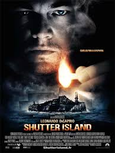
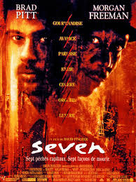
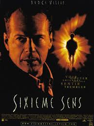

Un jour je serais le meilleur developpeur, meme si pour l'instant c'est galère.
Site du wagon|  |
Shutter IslandA la fin du film, on découvre que DiCaprio est lui-même un patient de l'asile, il est fou, et tout n'est qu'une mascarade. |
|  |
Sevenkevin Spacey est le méchant tueur. |
|  |
Sixieme sensLe docteur incarné par Bruce Willis est mort, c'est un fantôme durant tout le film. Mais il ne le sait pas. |